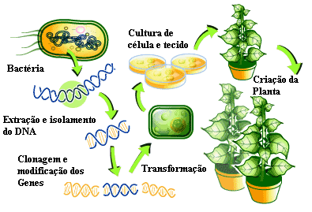
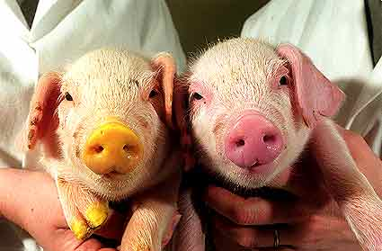
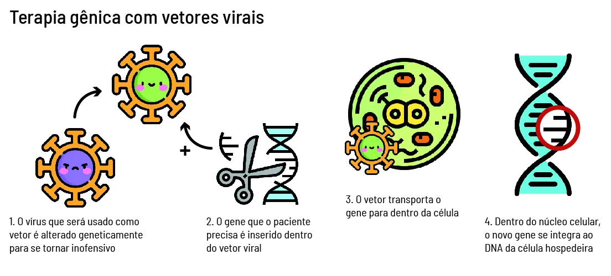
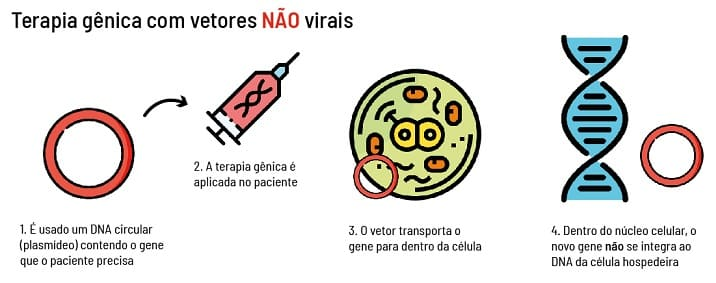

Tecnologia do DNA recombinante:
Esta técnica permite introduzir porções de DNA de uma determinada espécie num microrganismo que, em condições adequadas, se divide, permitindo a criação de inúmeras cópias do gene (ou do produto do gene). É muito aplicada em estudos de mecanismos de replicação e expressão génica, investigações de paternidade, diagnósticos de doenças genéticas e infeciosas, terapia génica e transgénicos. Os investigadores conservam os genes utilizados no DNA recombinante e os seus clones numa biblioteca de genes, e estes ficam armazenados para futuras utilizações.
Formação do cDNA:
A comparação entre o cDNA e o DNA original permite localizar as regiões codificantes (exões) e as não codificantes (intrões) de um determinado gene. O cDNA facilita a produção de proteínas nos seres procariontes. Como os seres procariontes não têm mecanismos de maturação do mRNA, se introduzíssemos um gene num procarionte que contém intrões, a sua transcrição seria feita de forma interrupta produzindo-se uma proteína diferente daquele que se pretende. Assim, o cDNA garante a formação duma proteína normal.
Organismos Geneticamente Modificados:
Os organismos geneticamente modificados (OGM) são organismos cujo genoma foi manipulado e quando, em resultado da manipulação, possuem material genético de outros organismos inserido no seu genoma podem ser designados organismos transgénicos. A manipulação permite obter de uma forma rápida organismos detentores de características vantajosas.
As plantas são mais facilmente manipuladas geneticamente do que os animais. As plantas geneticamente modificadas têm como características novas, por exemplo:
Na formação das plantas transgénicas, é utilizada a tecnologia do DNA recombinante. Primeiro, os genes com interesse são colocados no genoma da planta recorrendo a um vetor (normalmente um plasmídeo). De seguida, o plasmídeo recombinante é inserido numa cultura de células da planta in vitro de forma a que os novos genes sejam incorporados no DNA do núcleo destas células.
Estas células são estimuladas a dividirem-se, originando uma planta transgénica adulta que expressará a nova característica (codificada pelo gene introduzido) e a passará à sua descendência.
Por outro lado, os animais transgénicos ainda não são utilizados na nossa alimentação. Um exemplo é a produção de hormonas humanas por animais transgénicos, nos quais foram inseridos genes de diferentes organismos de forma a se obter o produto desejado. As proteínas produzidas por animais são mais funcionais do que quando produzidas com bactérias, que resultam das modificações pós-tradicionais que ocorrem nos mamíferos mas não nos procariontes.
Terapia génica:
A terapia gênica pode ser definida como um procedimento no qual são feitas modificações genéticas em células como uma forma de tratar uma determinada doença. Essas modificações são realizadas por meio da inserção de um gene funcional dentro da célula que substituirá o gene defeituoso e promoverá a produção de proteínas, corretamente. Este processo pode ser realizado a partir de duas técnicas diferentes: a germinativa e a somática. Na técnica germinativa, o novo gene é inserido nos espermatozoides ou óvulos, ou seja, nas células germinativas. Já no caso da técnica somática, o novo gene é inserido em outras células que não as germinativas.
 DNA fingerprint:
DNA fingerprinting significa impressão digital do DNA, isto é, a partir da análise do DNA de um organismo este pode ser identificado ao nível do individuo. Esta técnica é muito utilizada na investigação criminal para identificar criminosos a partir de resíduos de DNA (pele, sangue, esperma, cabelos, etc.) ou em testes de paternidade para identificar os pais (mãe e/ou pai) de uma criança ou de um bebé. Recorrendo a marcadores genéticos, nomeadamente o PCR e a electroforese, obtém-se padrões de bandas (caso se utilizem géis) ou de picos (caso se utilizem sequenciadores automáticos). Os perfis obtidos são comparados com um perfil padrão e o(s) indivíduo(s) são identificados.
Para além das técnicas faladas até então, existem também reações de polimerização em cadeia. Esta técnica permite fazer várias cópias a partir de um só fragmento da molécula. Inicialmente, é aquecida a amostra para que ocorra a separação das duas cadeias. De seguida, fornecem-se nucleótidos e a DNA polimerase para que se produza uma dupla cadeia a partir da cadeia simples. (A DNA polimerase provém de um organismo termófilo, permitindo assim conciliar as elevadas temperaturas a que decorre a técnica com a estabilidade da polimerase). Por fim, repetem-se esses passos o número de vezes necessário até se obter o número de cópias pretendido.
A Engenharia Genética tem vindo a desenvolver técnicas que, atualmente, são utilizadas em diversas áreas como a Medicina, a Agricultura e a Indústria. Não é novidade que estas novas tecnologias geram dúvidas e inquietações na sociedade, dado que é a primeira vez que o Homem "mexe" de forma tão drástica nos processos biológicos.
Por exemplo, a tecnologia do DNA recombinante permite a criação de novas combinações de genes que naturalmente nunca se encontrariam. Mas que consequências poderão trazer estas alterações?
Sabe-se que a inserção de determinados genes em certos locais do genoma pode levar à ativação de oncogenes, ou seja, ao desenvolvimento de cancros ou de outras doenças graves.
Contudo, a Engenharia Genética e a Biotecnologia têm permitido feitos que refletem a melhoria da qualidade de vida da nossa sociedade. Assim sendo, é fundamental que a sociedade conheça e compreenda de uma forma rigorosa o impacto que as novas tecnologias de manipulação dos seres vivos produzem ou podem vir a produzir. De igual modo, é necessário que a ciência evolua de uma forma mais cautelosa, pois os perigos e os benefícios desta área de conhecimento ainda estão bastante longe de serem totalmente conhecidos.